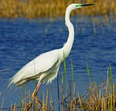
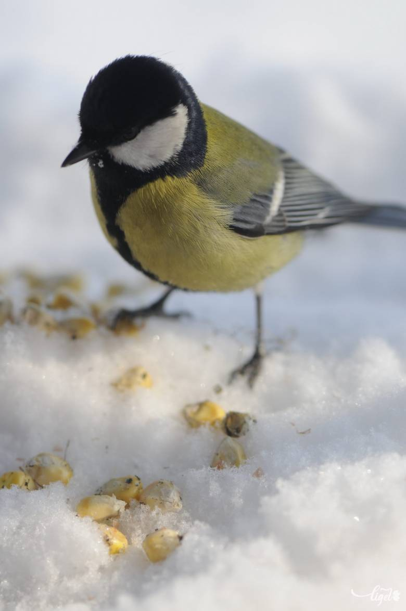

Madarak

Kép1
További képek
|  |  |
 |
| Kép2 | Kép3 | Kép4 |
Rokonság
A madarakat először Francis Willughby és John Ray rendszerezte 1676-ban kiadott Ornithologiae művükben.[3] Carl Linnaeus ezt felhasználva alkotta meg saját rendszerét 1758-ban.[4] Az ő nyomán a madarakat osztályként tartják nyilván, filogenetikailag a Theropoda kládba sorolhatók.
A madarak és testvércsoportjuk, a krokodilok az Archosauria klád ma is élő tagjai. Az 1990-es évek végéig az Archaeopteryx lithographica összes utódját a madarak közé sorolták.[6] Jacques Gauthier inkább csak a modern madarakat tekintette valódi madárnak, és a csak fosszíliákból ismert fajokat a madarakkal együtt a bővebb Avialae csoportba sorolta.[7] Ezzel elkerülte az Archaeopteryx körüli bizonytalanságot. A 21. században ez az osztályozás terjedt el.
A negyedik definíció szerint az Archaeopteryx nem tartozik a madarak közé. Gauthier javaslatát a legtöbb paleontológus és a madarak evolúciójával foglalkozó szakértők is elfogadták, habár pontos meghatározás nincs. A kutatók gyakran az Avialae tudományos névvel illetett csoportot nevezik madaraknak.[9]
Az Avialae a legtöbb kutató szerint ág-alapú klád, habár a meghatározások eltérnek egymástól. Sok szerző értelmezésében azok a theropodák, amelyek közelebb állnak a madarakhoz, mint a Deinonychushoz.[10][11] Néha testi jellemzők alapján különítik el a kládot. Jacques Gauthier 2001-ben új definíciót adott: tollas lények, amik legalább siklórepülésre (voltak) képesek, köztük a tőlük leszármazó madarakkal.[8][12]
https://hu.wikipedia.org/wiki/Madarak
Kültakaró
A madarak testét tollak borítják, amelyeket evezőtollakra, fedőtollakra és pehelytollakra különítünk el. Ez ma már csak a madarakra jellemző; a földtörténeti múltban a nem a valódi madarakhoz tartozó dinoszauruszok között is voltak tollasak. Ez biztosítja a hőszigetelést, és segít a repülésben is. A tollak még fontos szerepet játszanak a párválasztás során, illetve az álcázásban.[53] Több különböző tolltípus létezik a különféle célokra. A legtöbb madáron pásztákban nőnek, csak a pingvinek, a tüskésszárnyúmadár-félék és a ratites fajokon oszlanak el egyenletesen.[66] A pászták eloszlása jellemző a különféle rendszertani egységekre, így segíthetnek a meghatározásban. A tollazat egy fajon belül is különböző lehet, függ a nemtől,[67] a kortól és a társadalmi helyzettől.[68]
Rendszeresen vedlenek. Az évente kétszer vedlő fajok költési időn kívül nyugalmi tollruhát, udvarlási és költési időben nászruhát viselnek. A legtöbb faj évente vedlik; a nagy ragadozók még ritkábban, több évente. A vedlési mintázat fajonként változó. Az énekesmadaraknál a szárnytollak vedlése szimmetrikusan halad belülről kifelé. A következő toll akkor hullik ki, miután az előző már kinőtt. A fedőtollak az alattuk levő tollakkal együtt kerülnek sorra. A belső primary az első; miután az első öt primary lecserélődött, azután a terciary tollak következnek. Utánuk a secondary tollak jönnek.[69]
Néhány faj, például a kacsák egyszerre vesztik el szárnytollaikat, így egy időre röpképtelenekké válnak.[70] A faroktollak vedlési sorrendje a legtöbb fajon hasonló, belülről halad kifelé,[69] de például a fácánoknál kívülről kezdődik.[71] Harkályokon némileg módosult, a kifelé haladó fázis kihagyja a középső tollakat, azok a végén cserélődnek, így a harkály közben is támaszkodhat rá.[69][72] Énekesmadarakon a primary tollak kifelé, a secondary tollak kívülről befelé, és a farok belülről kifelé cserélődik.[73] Költés előtt a legtöbb faj nőstényei megkopaszodnak a hasukon. A bőr gazdagon erezett, ez segít a költésben.[74]
[...]
A madarak többnyire minden nap tollászkodnak, ébren töltött idejük 9%-át fordítják erre a tevékenységre.[75] Eltávolítják az idegen testeket. A madarak bőre mirigyekben szegény. Legfontosabb mirigyük a farcsíkmirigy (Glandula uropygii), amelynek zsírban gazdag viaszos váladéka vízhatlanná teszi a tollazatát, és akadályozza a baktériumok növekedését és szaporodását.[76] Egyes madaraknál különösen fejlett, más fajoknál hiányozhat. Tollászkodás végén ezzel a váladékkal keni be magát a madár. Ezt kiegészítheti hangyasavas kezeléssel, amit a hangyáktól szerezhet meg.[77]
A madarak lábán a pikkelyek ugyanúgy keratinból vannak, mint a csőr, a tollak és a karmok. Többnyire az ujjakon és a metatarsuson láthatók, de egyes madarakon (jégmadár, fakopáncsok) bokáig terjednek. Úgy gondolják, hogy homológok a hüllők és az emlősök pikkelyeivel.[78]
https://hu.wikipedia.org/wiki/Madarak